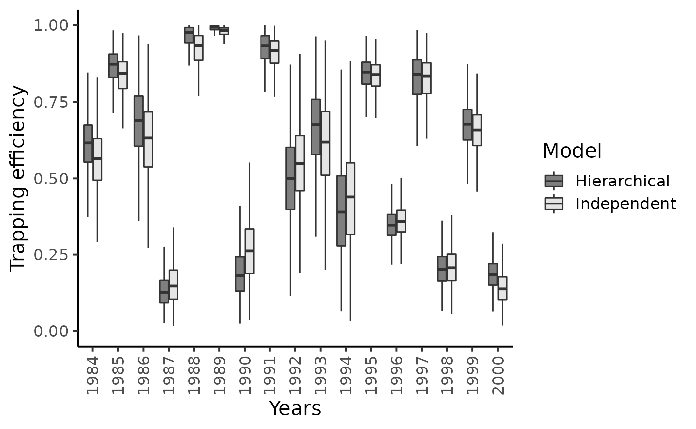
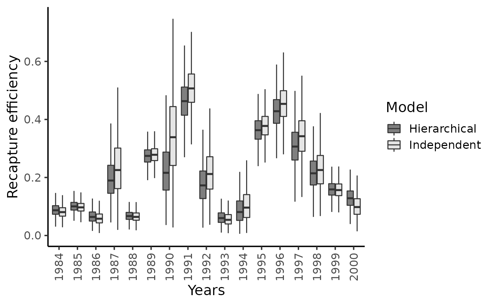
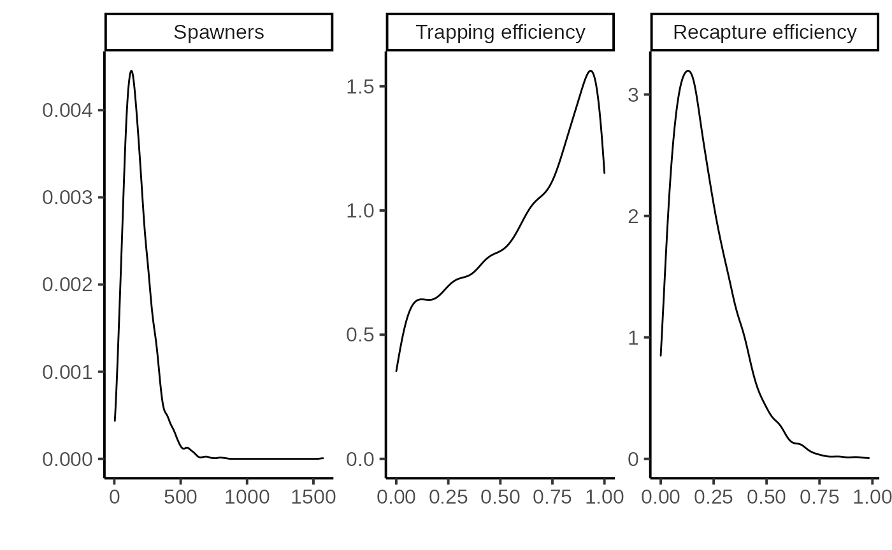

Hierarchical Exchangeable Binomial Model for Capture-Mark-Recapture Data
Jags code for chapter 9.2
hierarchical-exchangeable-cmr.RmdThe main idea is to link the capture-mark-recapture (CMR) models for yearly observations together by a hierarchical structure. In this case study inspired by the article of Rivot and Prévost (2002), the years are the statistical units that look alike and that hypothesized resemblance allows for transferring information from a given year to the other years.
Data
Relatively long but sparse (small sample size) series of data are quite common when dealing with CMR surveys aimed at estimating the abundance of wild populations over a series of years. For instance on the Oir River, the rangers from the French National Research Institute for Agronomy (INRA) and from the National Office of Water Management (ONEMA) have collected CMR data about adult salmon that swam back to spawn in the Oir River for the years 1984–2000.
Figure 1 – Marking a spawner entering the Scorff River
data("CmrOir")
CmrOir[2:7] %>% as_tibble() %>%
mutate(Year = 1984:2000, .before=1)%>% knitr::kable()| Year | y1 | y2 | y3 | y4 | y5 | y6 |
|---|---|---|---|---|---|---|
| 1984 | 167 | 10 | 3 | 154 | 12 | 10 |
| 1985 | 264 | 37 | 11 | 216 | 21 | 4 |
| 1986 | 130 | 28 | 9 | 93 | 5 | 4 |
| 1987 | 16 | 3 | 1 | 12 | 2 | 22 |
| 1988 | 226 | 35 | 8 | 183 | 12 | 0 |
| 1989 | 235 | 31 | 5 | 199 | 56 | 0 |
| 1990 | 15 | 4 | 4 | 7 | 2 | 15 |
| 1991 | 44 | 0 | 0 | 44 | 23 | 1 |
| 1992 | 31 | 10 | 1 | 20 | 4 | 5 |
| 1993 | 100 | 17 | 2 | 81 | 4 | 3 |
| 1994 | 32 | 12 | 2 | 18 | 1 | 4 |
| 1995 | 109 | 6 | 1 | 102 | 39 | 7 |
| 1996 | 70 | 13 | 2 | 55 | 25 | 57 |
| 1997 | 56 | 19 | 3 | 34 | 12 | 3 |
| 1998 | 34 | 3 | 1 | 30 | 6 | 30 |
| 1999 | 154 | 5 | 1 | 148 | 23 | 12 |
| 2000 | 53 | 0 | 0 | 53 | 4 | 33 |
For each year \(t\) from \(1984\) to \(2000\), \(y_{1,t}\) denotes the number of fish trapped at the Cerisel station (close to the mouth of the river). \(y_{2,t}+y_{3,t}\) individuals from the captured ones are not replaced upstream, either because they died during manipulation or because they are removed for experimental use or for hatchery production. Let \(y_{4,t}=y_{1,t}-(y_{2,t}+y_{3,t})\) the number of (tagged) fish released. These spawners are individually marked before they keep on swimming upstream . The recapture sample is gathered during and after spawning (see more details on recapture conditions hereafter). Let us denote as \(y_{5,t}\) and \(y_{6,t}\) the number of marked and unmarked fish among recaptured fish, respectively.

Figure 2 – Scheme of the Cerisel trapping facility (Oir river, Normandy, France) working as a double downstream (for smolt runs) and upstream (for spawner runs) partial counting fence. The black circles at the top of the figure indicates the release site of tagged smolts and spawners. The release site and the downstream trap are 1 km away from each other.
Modeling
Observation submodels for the first phace (Cerisel trapping place)
Let,
- \(\nu_t\) be the population size of spawners at year \(t\)
- \(\pi_t^1\) be the unknown trapping efficiency,
and assume all of the \(\nu_t\) spawners are independently and equally catchable in the trop with a probability \(\pi^1_t\) constant over the migration season. Then, the number of fish trrapped at the counting fence during migration time is the result of a Binomial experiment:
- \(y_{1,t} \sim Binomial(\nu_t, \pi^1_t)\).
Observation submodels for the second phase (re-collection during and after spawning)
The recapture sample is obtrainged by three methods: electrofishing on the spawning grounds, collection of dead fish after spawning, and trapping of spent fish at the downstram trap of the Cerisel facility. Modeling recapture with Binomial experiments with effeciency \(\pi^2_t\) is reasonable assuming the three following hypotheses: No spawner runs downstream after getting over the trap (\(H1\)); there is no tag shedding (\(H2\)); the recapture probability \(\pi_{t}^{2}\) is the same for all the fish whether or not marked (\(H3\)):
- \(y_{5,t} \sim Binomial(y_{4,t}, \pi^2_t)\)
- \(y_{6,t} \sim Binomial(\nu_t - y_{1,t}, \pi^2_t)\)
Latent layers
Let \(Z_t = (\nu_t, \pi^1_t, \pi^2_t)\) be the latent vector and \(y_t = (y_{1,t}, y_{5,t}, y_{6,t})\) the observations. The natural choice for the latent distributions are the Beta distribtion for \(\pi^1_t\) and \(\pi^2_t\) and the Negative Binomial ditribution for \(\nu_t\):
- \(\pi^1_t \sim Beta(a_1, b_1)\)
- \(\pi^2_t \sim Beta(a_2, b_2)\)
- \(\nu_t \sim NegBinomial(c,d)\)
Figure 3 – Directed Acyclic Graph representation of the hierarchical structure for the joint modeling of capture-mark-recapture experiments for the 17 years.
We assign a diffuse prior distribution to the higher level parameters \(\theta = (a_1, a_2, b_1, b_2, c, d)\) to reflect some ignorance about them. We use the following transform which recovers well understood meaning. For the trapping efficiency:
- \(\mu_{a,b} = \frac{a}{a+b}\) is the mean of the Beta distribution, with \(\mu_{a,b} \sim Beta(1.5, 1.5)\)
- \(u_{a,b} = a+b\) can be interpreted as a prior sample size that scale the variance of the Beta distribution, with \(\log(u_{a,b} \sim Uniform(0,10)\)).
For the number of spawners:
- \(\mu_{c,d} = \frac{c}{d}\) is the mean of the Negative Binomial distribution, with \(\mu_{c,d} \sim Uniform(0, \mu_{max})\), where \(\mu_{max} = 3000\) fish.
- \(\sigma^2_{c,d} = \frac{c(d+1)}{d^2}\) is the variance of the Negative Binomial distrution, with \(\log(\sigma_{c,d}) \sim Uniform(\log(\mu_{c,d}), \log(\sigma^2_{max}))\), where \(\sigma^2_{max} = 12\) since we do not believe that the standard deviation might exceed \(400\) fish.
Independent modeling
To show how a transfer of information between years is organized by the hierarchical model, we compare its results with the model assuming independence between years. For the models with independence, independent prior distributions with known parameters were set on \((\nu_{t},\pi_{t}% ^{1},\pi_{t}^{2})\):
- \(\pi_{t}^{1} \; \sim \; Beta(1.5,1.5)\)
- \(\pi_{t}^{2} \; \sim \; Beta(1.5,1.5)\)
- \(\nu_{t} \; \sim \; Uniform(1,3000)\)
Implementation, results and analysis
Independent model
The model can be written in rjags as the following
string:
ind_model_str <- "
model {
# N = 17 years (1984 to 2000)
pnu <- rep(1, 3000)
for (i in 1:N)
{
# Prior for trapping efficiency pi1
pi1[i] ~ dbeta(1.5,1.5)
# Prior for recapture efficiency pi2
pi2[i] ~ dbeta(1.5,1.5)
nu[i] ~ dcat(pnu[])
# Escapement (number of fish that mate)
Nsp[i] <- max(nu[i]-y2[i]-y3[i],0)
# Number of unmarked fish
nm[i] <- max(nu[i]-y1[i],0)
# Likelihood (binomial for capture and recapture)
y1[i] ~ dbin(pi1[i],nu[i])
y6[i] ~ dbin(pi2[i],nm[i])
y5[i] ~ dbin(pi2[i],y4[i])
} # end of loop on year i
} # end of model"And we fix the following initialization points for each of the three chains.
ind_init <-
list(
list(pi1 = rep(.5,CmrOir$N), pi2 = rep(.5, CmrOir$N), nu = rep(300, CmrOir$N)),
list(pi1 = rep(.2,CmrOir$N), pi2 = rep(.5, CmrOir$N), nu = rep(500, CmrOir$N)),
list(pi1 = rep(.8,CmrOir$N), pi2 = rep(.5, CmrOir$N), nu = rep(1000, CmrOir$N))
)
ind_model <- jags.model(file = textConnection(ind_model_str),
data = CmrOir, inits = ind_init,
n.chains = 3)
#> Compiling model graph
#> Resolving undeclared variables
#> Allocating nodes
#> Graph information:
#> Observed stochastic nodes: 51
#> Unobserved stochastic nodes: 51
#> Total graph size: 244
#>
#> Initializing model
# Inferences
update(ind_model, n.iter = 10000)
posterior_sample_ind <- coda.samples(ind_model,
variable.names = c("pi1", "pi2", "nu"),
n.iter = 10000,
thin = 10)Diagnostic
summarise_draws(as_draws_df(posterior_sample_ind),
default_convergence_measures()) %>%
knitr::kable()| variable | rhat | ess_bulk | ess_tail |
|---|---|---|---|
| nu[1] | 1.0013690 | 993.8650 | 1402.8073 |
| nu[2] | 1.0019188 | 1301.0693 | 1817.1009 |
| nu[3] | 1.0047103 | 696.9189 | 939.2453 |
| nu[4] | 1.0043067 | 1093.5905 | 1601.1423 |
| nu[5] | 1.0019027 | 1022.9990 | 1278.6559 |
| nu[6] | 1.0004007 | 2659.7480 | 2936.2192 |
| nu[7] | 1.0004199 | 1561.2548 | 1785.0422 |
| nu[8] | 0.9998430 | 2682.8475 | 2880.7041 |
| nu[9] | 1.0002507 | 2026.1694 | 2364.0482 |
| nu[10] | 1.0007880 | 835.2781 | 1192.8109 |
| nu[11] | 1.0008658 | 1139.6212 | 1296.5161 |
| nu[12] | 1.0007640 | 2835.5706 | 2970.8976 |
| nu[13] | 0.9997233 | 2644.7484 | 2416.3082 |
| nu[14] | 1.0015857 | 2567.8427 | 2769.8569 |
| nu[15] | 1.0000188 | 1724.8200 | 2041.7691 |
| nu[16] | 0.9998513 | 2208.8187 | 2771.5664 |
| nu[17] | 1.0047596 | 852.9044 | 1214.2785 |
| pi1[1] | 1.0013372 | 974.9461 | 1425.9177 |
| pi1[2] | 1.0017211 | 1288.5764 | 1998.3713 |
| pi1[3] | 1.0041901 | 716.0069 | 969.2572 |
| pi1[4] | 1.0036057 | 1248.7285 | 1520.3286 |
| pi1[5] | 1.0020058 | 1027.5631 | 1278.2841 |
| pi1[6] | 1.0000219 | 2686.6746 | 2945.4777 |
| pi1[7] | 1.0011686 | 1667.8347 | 1673.9751 |
| pi1[8] | 1.0017163 | 2986.1406 | 2824.9457 |
| pi1[9] | 1.0006148 | 2074.6710 | 2481.0897 |
| pi1[10] | 1.0011731 | 847.9701 | 1228.4709 |
| pi1[11] | 1.0006020 | 1091.6438 | 1381.1840 |
| pi1[12] | 1.0000989 | 2970.5276 | 2988.4496 |
| pi1[13] | 1.0002324 | 2717.8513 | 2878.4232 |
| pi1[14] | 0.9996568 | 2805.3258 | 2829.3109 |
| pi1[15] | 1.0004164 | 1871.1486 | 2035.4621 |
| pi1[16] | 0.9996745 | 2209.9208 | 2755.1743 |
| pi1[17] | 1.0043925 | 867.3266 | 1249.9307 |
| pi2[1] | 1.0016015 | 1406.6701 | 2134.6575 |
| pi2[2] | 1.0004181 | 2505.9535 | 2771.2567 |
| pi2[3] | 1.0003594 | 1250.1963 | 1850.7094 |
| pi2[4] | 1.0053972 | 1091.9978 | 1696.1680 |
| pi2[5] | 1.0003103 | 2565.7296 | 2791.5070 |
| pi2[6] | 0.9999579 | 2652.4572 | 2733.7803 |
| pi2[7] | 1.0006617 | 1645.5332 | 2024.3918 |
| pi2[8] | 1.0005218 | 2879.1677 | 2839.1901 |
| pi2[9] | 1.0008550 | 2117.5513 | 2412.4405 |
| pi2[10] | 1.0008445 | 1471.3449 | 2052.5595 |
| pi2[11] | 1.0001669 | 1418.7802 | 2134.3629 |
| pi2[12] | 1.0015196 | 2949.2289 | 2616.5255 |
| pi2[13] | 1.0001725 | 2711.4697 | 2908.0769 |
| pi2[14] | 0.9996217 | 2993.4374 | 2988.8836 |
| pi2[15] | 1.0007358 | 1865.2145 | 2110.1324 |
| pi2[16] | 1.0006582 | 2660.0672 | 2577.1729 |
| pi2[17] | 1.0033700 | 920.0852 | 1325.1539 |
Hierarchical model
hier_model_str <- "
model {
# N = 17 years (1984 to 2000)
# Hyperprior for thetrapping efficiency
mu1_ab ~ dbeta(1.5, 1.5)
log_u1_ab ~ dunif(0,10)
u1_ab <- exp(log_u1_ab)
alpha1 <- mu1_ab * u1_ab
beta1 <- (1-mu1_ab)*u1_ab
# Hyperprior for the recapture efficiency
mu2_ab ~ dbeta(1.5, 1.5)
log_u2_ab ~ dunif(0,10)
u2_ab <- exp(log_u2_ab)
alpha2 <- mu2_ab * u2_ab
beta2 <- (1-mu2_ab)*u2_ab
# Hyperperior for nu_max
pmunu <- rep(1, 3000)
mu_nu ~ dcat(pmunu)
inf_log_sig2_nu <- log(mu_nu)
log_sig2_nu ~ dunif(inf_log_sig2_nu, 12)
sig2_nu <- exp(log_sig2_nu)
p <- mu_nu/sig2_nu # d = p/(1-p)
c <- mu_nu * p*(1-p)
# Predictive distributions
pi1_pred ~ dbeta(alpha1, beta1)
pi2_pred ~ dbeta(alpha2, beta2)
nu_pred ~ dnegbin(p,c)
for (i in 1:N)
{
# Prior for trapping efficiency pi1
pi1[i] ~ dbeta(alpha1, beta1)
# Prior for recapture efficiency pi2
pi2[i] ~ dbeta(alpha2, beta2)
nu[i] ~ dnegbin(p,c)
# Escapement (number of fish that mate)
Nsp[i] <- max(nu[i]-y2[i]-y3[i],0)
# Number of unmarked fish
nm[i] <- max(nu[i]-y1[i],0)
# Likelihood (binomial for capture and recapture)
y1[i] ~ dbin(pi1[i],nu[i])
y6[i] ~ dbin(pi2[i],nm[i])
y5[i] ~ dbin(pi2[i],y4[i])
} # end of loop on year i
} # end of model"And we fix the following initialization points for each of the three chains.
hier_init <-
list(
list(pi1 = rep(.5, CmrOir$N), pi1_pred = .5, mu1_ab = .6, log_u1_ab = .6,
pi2 = rep(.5, CmrOir$N), pi2_pred = .2, mu2_ab = .6, log_u2_ab = .6,
nu = rep(300, CmrOir$N), nu_pred = 300, mu_nu = 10, log_sig2_nu = 3),
list(pi1 = rep(.2, CmrOir$N), pi1_pred = .2, mu1_ab = .5, log_u1_ab = .25,
pi2 = rep(.5, CmrOir$N), pi2_pred = .2, mu2_ab = .5, log_u2_ab = .25,
nu = rep(500, CmrOir$N), nu_pred = 500, mu_nu = 50, log_sig2_nu = 4),
list(pi1 = rep(.8, CmrOir$N), pi1_pred = .5, mu1_ab = .5, log_u1_ab = .25,
pi2 = rep(.5, CmrOir$N), pi2_pred = .5, mu2_ab = .5, log_u2_ab = .25,
nu = rep(1000, CmrOir$N), nu_pred = 1000, mu_nu = 100, log_sig2_nu = 5)
)
hier_model <- jags.model(file = textConnection(hier_model_str),
data = CmrOir, inits = hier_init,
n.chains = 3)
#> Compiling model graph
#> Resolving undeclared variables
#> Allocating nodes
#> Graph information:
#> Observed stochastic nodes: 51
#> Unobserved stochastic nodes: 60
#> Total graph size: 268
#>
#> Initializing model
# Inferences
pars <- c("pi1", "pi1_pred", "mu1_ab", "u1_ab",
"pi2", "pi2_pred", "mu2_ab", "u2_ab",
"nu", "nu_pred", "mu_nu", "log_sig2_nu")
update(hier_model, n.iter = 10000)
posterior_sample_hier <- coda.samples(hier_model,
variable.names = pars,
n.iter = 10000,
thin = 10)Diagnostic
summarise_draws(as_draws_df(posterior_sample_hier),
default_convergence_measures()) %>%
knitr::kable()| variable | rhat | ess_bulk | ess_tail |
|---|---|---|---|
| log_sig2_nu | 0.9997319 | 2395.384 | 2669.261 |
| mu1_ab | 1.0019660 | 2661.879 | 2704.381 |
| mu2_ab | 0.9996043 | 2624.235 | 2893.343 |
| mu_nu | 0.9994781 | 2275.223 | 2604.974 |
| nu[1] | 1.0011896 | 1554.654 | 1908.692 |
| nu[2] | 1.0021367 | 1624.971 | 2254.885 |
| nu[3] | 1.0030374 | 1050.078 | 1679.898 |
| nu[4] | 1.0009683 | 1299.503 | 2230.798 |
| nu[5] | 1.0000910 | 1246.117 | 1293.924 |
| nu[6] | 0.9996345 | 2522.676 | 2617.274 |
| nu[7] | 1.0005535 | 1588.662 | 2498.688 |
| nu[8] | 1.0003906 | 2945.202 | 2953.627 |
| nu[9] | 1.0012364 | 1353.796 | 2203.618 |
| nu[10] | 1.0018569 | 1230.897 | 1571.830 |
| nu[11] | 1.0015666 | 1267.747 | 2095.106 |
| nu[12] | 1.0001599 | 3007.668 | 2586.552 |
| nu[13] | 0.9994760 | 2569.897 | 2742.954 |
| nu[14] | 1.0003968 | 2675.193 | 2313.388 |
| nu[15] | 1.0023591 | 2018.946 | 2427.733 |
| nu[16] | 0.9996841 | 2130.689 | 2468.704 |
| nu[17] | 1.0027445 | 1627.417 | 2203.366 |
| nu_pred | 1.0015837 | 2746.470 | 2720.931 |
| pi1[1] | 1.0016010 | 1528.499 | 2088.597 |
| pi1[2] | 1.0033526 | 1587.426 | 2098.956 |
| pi1[3] | 1.0029123 | 1115.654 | 1764.632 |
| pi1[4] | 1.0002038 | 1625.597 | 2489.303 |
| pi1[5] | 0.9995230 | 1302.381 | 1359.398 |
| pi1[6] | 0.9997740 | 2623.877 | 2829.082 |
| pi1[7] | 1.0016581 | 1575.385 | 2229.445 |
| pi1[8] | 0.9999254 | 2925.307 | 2878.503 |
| pi1[9] | 1.0008627 | 1376.934 | 2317.700 |
| pi1[10] | 1.0011772 | 1229.514 | 1726.110 |
| pi1[11] | 1.0023860 | 1263.814 | 1940.431 |
| pi1[12] | 1.0010282 | 3063.732 | 2677.979 |
| pi1[13] | 0.9999112 | 2713.748 | 2455.949 |
| pi1[14] | 1.0011365 | 2372.484 | 2448.762 |
| pi1[15] | 1.0000181 | 1931.741 | 2721.123 |
| pi1[16] | 1.0002541 | 2235.443 | 2666.400 |
| pi1[17] | 1.0001212 | 1817.507 | 2298.095 |
| pi1_pred | 1.0002161 | 2665.024 | 3040.714 |
| pi2[1] | 1.0005623 | 2214.258 | 2484.804 |
| pi2[2] | 1.0013452 | 2659.608 | 2688.503 |
| pi2[3] | 1.0027861 | 1455.231 | 2294.388 |
| pi2[4] | 1.0000595 | 1535.814 | 2356.742 |
| pi2[5] | 1.0002026 | 2820.090 | 2905.713 |
| pi2[6] | 1.0000021 | 2674.456 | 2430.697 |
| pi2[7] | 1.0006700 | 1801.042 | 2519.803 |
| pi2[8] | 1.0012373 | 2720.970 | 2740.133 |
| pi2[9] | 1.0006231 | 1773.399 | 2573.889 |
| pi2[10] | 1.0006133 | 2130.209 | 2412.496 |
| pi2[11] | 1.0017309 | 1702.560 | 2417.880 |
| pi2[12] | 0.9999596 | 2952.623 | 2928.377 |
| pi2[13] | 0.9995414 | 2474.594 | 2684.712 |
| pi2[14] | 1.0006674 | 2592.162 | 2387.218 |
| pi2[15] | 1.0004399 | 2032.824 | 2570.932 |
| pi2[16] | 1.0003019 | 2608.952 | 2624.330 |
| pi2[17] | 1.0010658 | 1840.344 | 2480.820 |
| pi2_pred | 0.9993152 | 3125.068 | 3077.635 |
| u1_ab | 0.9993884 | 2650.360 | 2852.368 |
| u2_ab | 1.0000074 | 2462.765 | 2983.584 |
Results and analysis
We extract the results of both model into long form and wide form data frames.
dfl_ind <- extract_longer(posterior_sample_ind) %>%
mutate(Model = "Independent")
dfw_ind <- extract_wider(posterior_sample_ind) %>%
mutate(Model = "Independent")
dfl_hier <- extract_longer(posterior_sample_hier) %>%
mutate(Model = "Hierarchical")
dfw_hier <- extract_wider(posterior_sample_hier) %>%
mutate(Model = "Hierarchical")Comparing the efficiency and number of spawners distribution for both models
dfl_ind %>% bind_rows(dfl_hier) %>%
filter(str_detect(parameter, "^pi1\\.")) %>%
mutate(Years = as.factor(seq(1984,2000)[as.integer(str_sub(parameter, 5))])) %>% # 5 = length("pi1.") + 1
ggplot() +
aes(x = Years, y = value, fill = Model) +
geom_boxplot(outlier.shape = NA, outlier.size = .25) +
scale_x_discrete(guide = guide_axis(angle = 90)) +
ylim(c(0,1)) +
scale_fill_manual(values = c("gray50", "gray90")) +
ylab("Trapping efficiency") + xlab("Years") +
theme_classic(base_size = 15L)
dfl_ind %>% bind_rows(dfl_hier) %>%
filter(str_detect(parameter, "^pi2\\.")) %>%
mutate(Years = as.factor(seq(1984,2000)[as.integer(str_sub(parameter, 5))])) %>% # 5 = length("pi2.") + 1
ggplot() +
aes(x = Years, y = value, fill = Model ) +
geom_boxplot(outlier.shape = NA, outlier.size = .25) +
scale_x_discrete(guide = guide_axis(angle = 90)) +
ylim(c(0,0.75)) +
scale_fill_manual(values = c("gray50", "gray90")) +
ylab("Recapture efficiency") + xlab("Years") +
theme_classic(base_size = 15L)
#> Warning: Removed 14 rows containing non-finite values (stat_boxplot).
dfl_ind %>% bind_rows(dfl_hier) %>%
filter(str_detect(parameter, "^nu\\.")) %>%
mutate(Years = as.factor(seq(1984,2000)[as.integer(str_sub(parameter, 4))])) %>% # 4 = length("nu.") + 1
ggplot() +
aes(x = Years, y = value, fill = Model ) +
geom_boxplot(outlier.shape = NA, outlier.size = .25) +
scale_x_discrete(guide = guide_axis(angle = 90)) +
ylim(c(0,1000)) +
scale_fill_manual(values = c("gray50", "gray90")) +
ylab("Spawners") + xlab("Years") +
theme_classic(base_size = 15L)
#> Warning: Removed 53 rows containing non-finite values (stat_boxplot).
Results highlight that hierarchical modeling has no effect on the inferences on the capture efficiencies but gratly improve posterior inferences of psawners migrating back to the Oir River.
Posterior mean values of the capture probabilities \(\pi_{t}^{1}\) do not seem to shrink much toward their overall grand mean and the recapture probabilities \(\pi_{t}^{2}\)’s are only slightly subjected to the shrinkage effect. There remains a lot of between-year variability in the experimental conditions at the Cerisel trapping facility.
Conversely, the hierarchical structure hypothesized on \(\nu_{t}\)’s strongly reduces the skewness and uncertainty in the estimation of the number of spawners. The grey boxplots clearly point out that the most precise inferences are obtained under the hierarchical model, especially for the years with sparse CMR data, i.e., low number of marked released or, more importantly, low number of recaptures of previously marked fish yield (e.g., years \(1987\), \(1990\), \(1994\) and \(2000\)). For this latter year, the upper bounds of the \(95\%\) Bayesian credibility intervals obtained with the model assuming independence between years appears unrealistically high given the size of the Oir River and the available knowledge on the biology and ecology of Atlantic salmon as exemplified for year \(2000\).
dfw_ind %>% bind_rows(dfw_hier) %>%
ggplot(aes(x = `nu.17`, linetype = Model)) +
geom_density() +
xlim(c(0, 1000)) +
xlab("Spawners") + ylab("") +
theme_classic(base_size = 15L)
#> Warning: Removed 53 rows containing non-finite values (stat_density).
Posterior predictive of the hierarchical model
summarise_draws(as_draws_df(posterior_sample_hier),
default_summary_measures()) %>%
filter(str_detect(variable, "pred"))
#> # A tibble: 3 × 7
#> variable mean median sd mad q5 q95
#> <chr> <dbl> <dbl> <dbl> <dbl> <dbl> <dbl>
#> 1 nu_pred 181. 157 116. 96.4 45 395.
#> 2 pi1_pred 0.595 0.636 0.299 0.379 0.0746 0.990
#> 3 pi2_pred 0.209 0.182 0.142 0.136 0.0313 0.484
par.labs <- c("Spawners", "Trapping efficiency",
"Recapture efficiency")
names(par.labs) <- c("nu_pred", "pi1_pred", "pi2_pred")
dfl_hier %>%
filter(str_detect(parameter, "pred")) %>%
ggplot(aes(x = value)) +
xlab("")+ ylab("") +
facet_wrap( ~ parameter,
scales = "free",
labeller = labeller(parameter = par.labs)) +
geom_density() +
theme_classic(base_size = 15L)
A straightforward result of the hierarchical model are the posterior predictive distributions of the trapping or recapture efficiencies and of the number of returns , denoted \([\pi^{1,new}|data_{1984:2000}]\) and \([\pi^{2,new}|data_{1984:2000}]\), and \([\nu^{new}|data_{1984:2000}],\) respectively. The posterior predictive of the recapture efficiency and of the returns are informative distributions. Thus, the data of all years combined allow discarding a priori the possibility of very high trapping efficiency (i.e., greater than 0.5) or high spawner population size (i.e., greater than a thousand) in any additional year.
In-depth sensitivity analyses and another observation model for the recaptures can be found in Rivot and Prévost (2002).